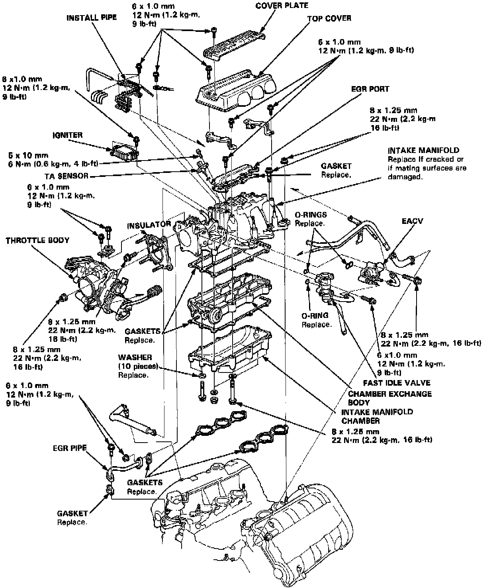
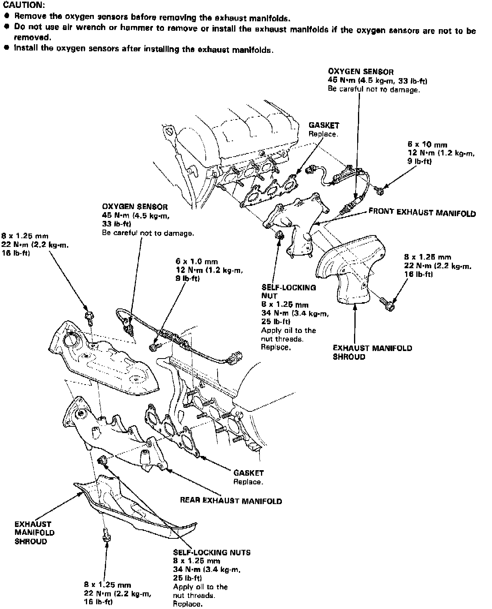
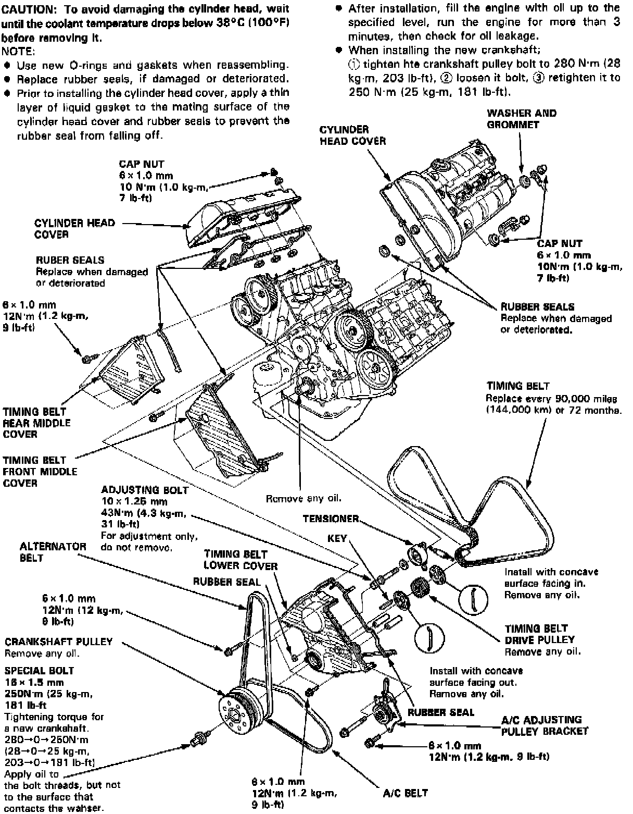
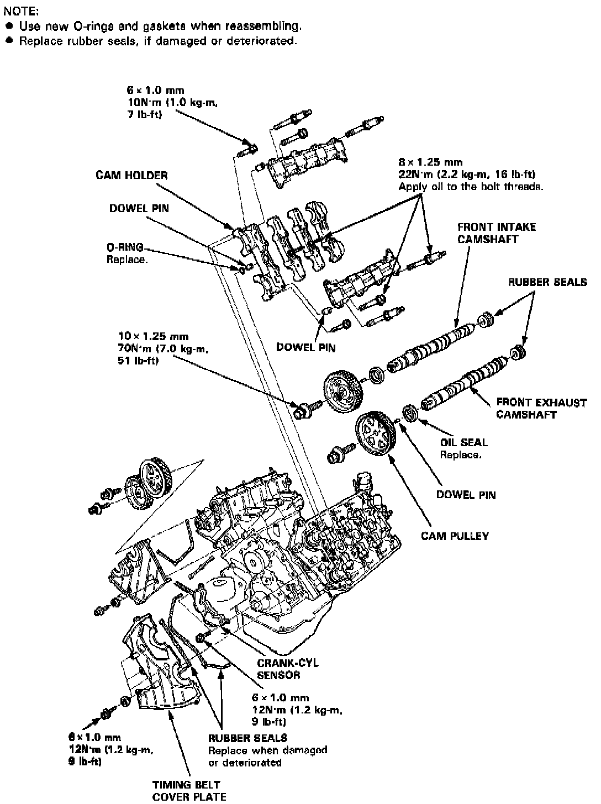
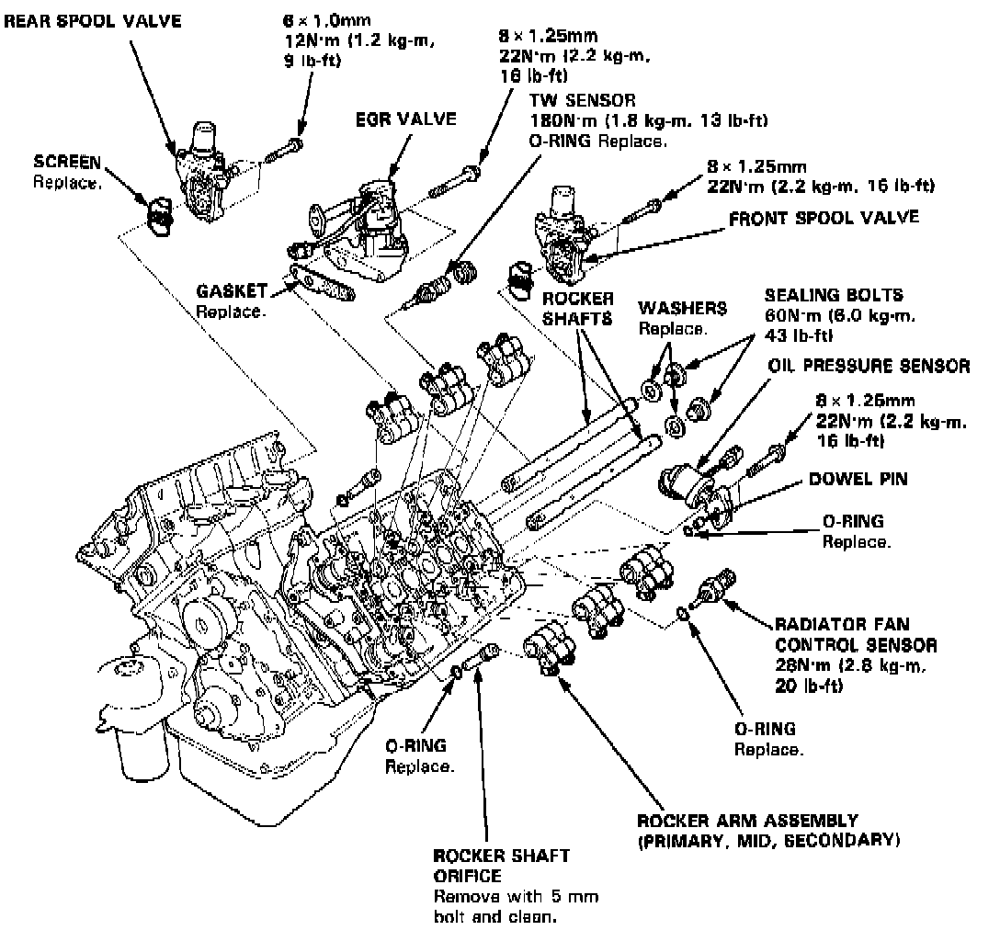
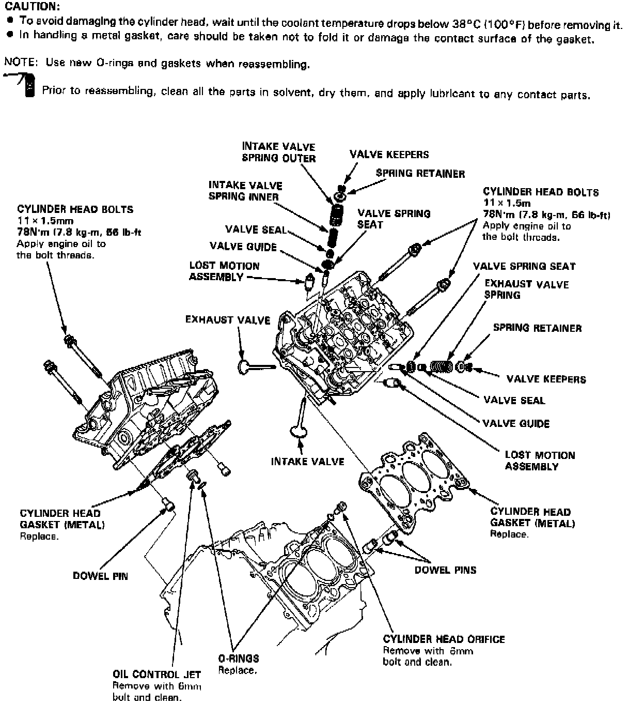
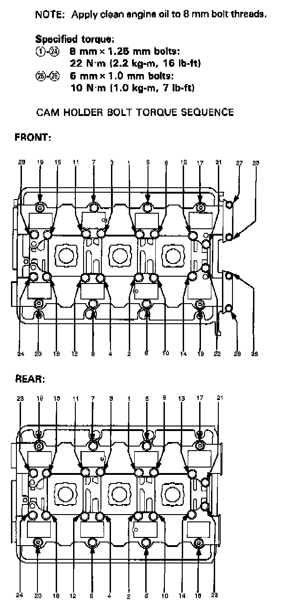
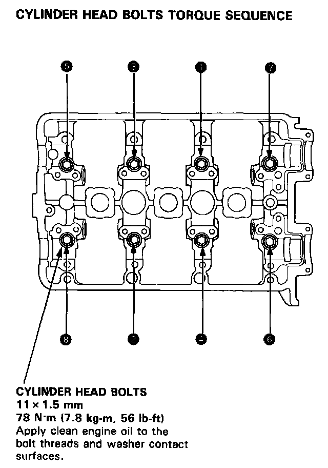

System Specifications
Intake:

Exhaust Manifold:

Upper Engine:




Cam Holder Torque/Sequence:

Head Bolt Torque/Sequence:

Tighten cylinder head bolts sequentially in two or three steps to 78 N.m (7.8 kg-m, 56 ft.lb)